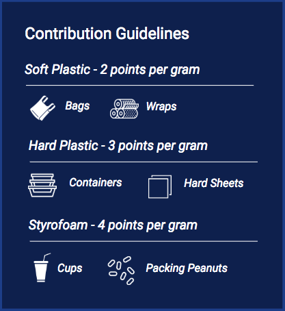

{% extends "base.html" %}
{% import 'bootstrap/wtf.html' as wtf %}

{% block styles %}
{{super()}}
<link rel="stylesheet" href="../../static/css/upload.css">
{% endblock %}

{% block app_content %}

<link href="https://cdnjs.cloudflare.com/ajax/libs/bootstrap-fileinput/4.4.5/css/fileinput.min.css" media="all"
      rel="stylesheet" type="text/css"/>
<!-- if using RTL (Right-To-Left) orientation, load the RTL CSS file after fileinput.css by uncommenting below -->
<!-- link href="https://cdnjs.cloudflare.com/ajax/libs/bootstrap-fileinput/4.4.5/css/fileinput-rtl.min.css" media="all" rel="stylesheet" type="text/css" /-->
<!-- optionally uncomment line below if using a theme or icon set like font awesome (note that default icons used are glyphicons and `fa` theme can override it) -->
<!-- link https://cdnjs.cloudflare.com/ajax/libs/font-awesome/4.7.0/css/font-awesome.min.css media="all" rel="stylesheet" type="text/css" /-->
<script src="https://code.jquery.com/jquery-3.2.1.min.js"></script>
<!-- piexif.min.js is needed for auto orienting image files OR when restoring exif data in resized images and when you
    wish to resize images before upload. This must be loaded before fileinput.min.js -->
<script src="https://cdnjs.cloudflare.com/ajax/libs/bootstrap-fileinput/4.4.5/js/plugins/piexif.min.js"
        type="text/javascript"></script>
<!-- sortable.min.js is only needed if you wish to sort / rearrange files in initial preview. 
    This must be loaded before fileinput.min.js -->
<script src="https://cdnjs.cloudflare.com/ajax/libs/bootstrap-fileinput/4.4.5/js/plugins/sortable.min.js"
        type="text/javascript"></script>
<!-- purify.min.js is only needed if you wish to purify HTML content in your preview for 
    HTML files. This must be loaded before fileinput.min.js -->
<script src="https://cdnjs.cloudflare.com/ajax/libs/bootstrap-fileinput/4.4.5/js/plugins/purify.min.js"
        type="text/javascript"></script>
<!-- popper.min.js below is needed if you use bootstrap 4.x. You can also use the bootstrap js 
   3.3.x versions without popper.min.js. -->
<script src="https://cdnjs.cloudflare.com/ajax/libs/popper.js/1.11.0/umd/popper.min.js"></script>
<!-- bootstrap.min.js below is needed if you wish to zoom and preview file content in a detail modal
    dialog. bootstrap 4.x is supported. You can also use the bootstrap js 3.3.x versions. -->
<script src="https://maxcdn.bootstrapcdn.com/bootstrap/4.0.0-beta/js/bootstrap.min.js" type="text/javascript"></script>
<!-- the main fileinput plugin file -->
<script src="https://cdnjs.cloudflare.com/ajax/libs/bootstrap-fileinput/4.4.5/js/fileinput.min.js"></script>

<script src="../static/scripts/loading.js"></script>


<div id="content">

    <div class="row">
        <div class="col-md-6">
            <div class="card card-container">
            <h1>Earn OceanPrize Points</h1>
            <br>
            <form method="POST" enctype="multipart/form-data">
                <label class="control-label">Upload Receipt</label>
                <input id="input-b3" name="file" type="file" class="file" multiple
                       data-show-upload="false" data-show-caption="true"
                       data-msg-placeholder="Select {files} for upload...">
                <br>
            </form>
            <div class="alert alert-info" role="alert">Please enter your recycled item weight in grams</div>
            {{ wtf.quick_form(form) }}
        </div>
                </div>
        <div class="col-md-6">
            <div class="container centy">
                
            </div>

        </div>
    </div>
</div>


{% endblock %}